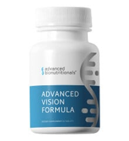

Advanced Vision Formula
Product profile · Marketplace data 2026-10-09 · Sales-page research 2026-10-09 · Categories: Health & Fitness, Food Supplements

Marketplace record
| Product type | Supplements - health |
|---|---|
| Price | $78.25 (Single payment) |
| Affiliate commission | 60% |
| Refund window | Per the vendor's sales page — check the official page before buying |
| Vendor | soundview (listed since 2025-08-20) |
| Marketplace stats* | Cart conversion — · cancel rate — · affiliate earnings/sale $46.95 |
* Vendor-side marketplace statistics reported by Digistore24; they depend on traffic quality and are not a forecast.
Vendor's marketplace description
Earn Big with Advanced Vision Formula – A Lucrative Opportunity for Affiliates!Promote Advanced Vision Formula, a high-demand eye health supplement, and enjoy exceptional affiliate benefits. Designed with clinically-proven ingredients like Astaxanthin and Lutein, this product addresses a growing need for vision support in today’s screen-heavy world.Why Choose Advanced Vision Formula? High Commissi…
From the vendor's sales page
Page title: Tired Eyes & Fatigue Caused By Eyestrain?
Headline
Tired Eyes & Fatigue Caused By Eyestrain?
Section headlines
- Key Benefits
- 3 Vision-Enhancing Nutrients
- #1 Citicoline ®
- #2 Beta Glucan
- #3 Gingko Biloba
- 6 More Powerful Nutrients
- About Dr. Frank Shallenberger
- Customer Testimonials
- 100% Satisfaction "Feel the Difference" Money-Back Guarantee
- Try Advanced Vision Formula Risk-Free and Save
Opening copy
A powerful neuroprotector that improves brain function. Giving you neuroprotective support for the nerve cells in your eyes. It's often given to people who struggle with cognitive issues.
A powerful polysaccharide that helps slow the absorption of higher level glycemic index carbohydrates to promote eye health and function. You can actually lower your glycemic response by up to 25%.
Known for its remarkable ability to boost blood circulation to the brain. This also helps improve your eyesight. It keeps your optic nerves healthy. It helps your eyes flush away toxins that would otherwise build up. It gets more nutrients to your eyes faster.
Prices mentioned on the page: $69.95 · $57.95 · $132.00 · $347.70 · $62.95 · $51.00 · $188.85
Guarantee language found: “90” — always confirm the current terms on the official page before relying on it.
CTA buttons: “Order Now” · “Add To Cart”
Research method: raw HTML fetch · 1509 words on page · quality: rich · researched 2026-10-09. Full research file (MD) ↗
Where to check it out
Read the vendor's full sales page (current price, guarantee terms and bonuses are listed there):
View official sales page
That link is an affiliate link — if you buy through it we earn a commission from the vendor at no extra cost to you.